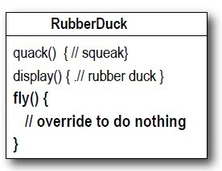
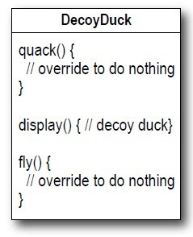
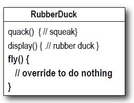
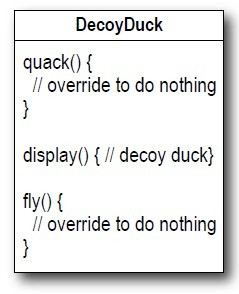

浅谈设计模式一: 策略模式(Strategy)
Table of Contents
实例
有一个模拟鸭子的应用完成。这个应用可以仿真鸭子的各种活动，比如游泳，鸣叫，飞等等。能马上想到的模式设计如下：

一个基类 Duck 定义Duck的一些特性，子类继承它的特性，并覆盖它的部分特性。至此没什么问题。子类共同拥有父类的特性，消除了代码的重复性。
然后想让 Duck 具有有 fly() 的特性，把它加到父类中，相应的不同
duck(子类）如果不具备 或 fly() 或 quack 的特性,那么就去覆盖父类相应的特性。
 



每增加一个不同的子类 duck，如果没有父类相应的特性都要去覆盖它，很冗余。
那么如果把不变的特性继续放在基类 Duck 里，而把变化的特性拿出来做成独立的接口呢？

1. 增加代码的冗余性，每个子类duck都要去实现部分相同的特性;2. 想更改一个相同的 fly() 特性，要在相应的所有子类都修改
策略模式(Strategy)
目的
定义一组算法，分别封装每一个，并使它们能互换。策略模式(Strategy)使得对象独立的变化使用这组算法。
实现
如何使得不同子类的duck，参考代码。
- 具有自己的行为特性;
- 能复用代码，不同的duck能共享相同行为特性代码，不造成代码的冗余;
- 易于后期特性的更改，不会造成修改一个行为特性，要修改很多处，并易于扩张的新的行为特性
- 分离出那些变化的行为
这里
fly()和quack()行为在不同duck类中变化。 把它们做成一个话的接口(面向接口编程而不是实现)。C++中定义一个虚类，其他不同的行为类继承这个类并实现这个虚类中的虚函数接口（Java是实现这个接口）。基本如下：
class FlyBehavior { public: virtual ~FlyBehavior() {} virtual void fly() = 0; }; class FlyNoWay : public FlyBehavior { public: FlyNoWay() {} virtual ~FlyNoWay() {} virtual void fly(); }; class FlyWithWings : public FlyBehavior { public: virtual ~FlyWithWings() {} virtual void fly(); };
- 整合到Duck类里
关键处在：现在Duck委托（delegate）它的
flying和quacking行为，而不是直接使用类或子类里它们的方法。
class Duck { public: Duck(void); virtual ~Duck(); virtual void display() = 0; virtual void swim(); void set_fly_behavior(FlyBehavior *fly_behavior); void set_quack_behavior(QuackBehavior *quack_behavior); void performFly(); void performQuack(); protected: FlyBehavior *fly_behavior_; QuackBehavior *quack_behavior_; };
- 子类Duck各自拥有自己的行为，并用
set_xx_behavior动态改变行为DecoyDuck::DecoyDuck() { fly_behavior_ = new FlyNoWay; quack_behavior_ = new MuteQuack; }
model->performFly(); model->set_fly_behavior(new FlyRocketPowered); model->performFly();
- 总的框架

总结
策略模式(Strategy)结构

组成
- 策略类（Strategy) 声明一个所有算法都支持的公共接口。场景(Context)利用这个接口来调用具体策略类（ConcreteStrategy）实现的算法。
- 具体策略类（ConcreteStrategy) 用策略类接口实现自己的酸饭。
- 场景（Context）
- 被具体策略对象配置。
- 维持一个策略对象的引用。
- 可能定义一个让策略对象获取它的数据的接口。
应用场景
使用策略模式当
- 很多相关的类只是不同于它们的行为。策略提供了一种能使用多种行为中一种来配置类的方法。
- 当你需要一种算法的不同变体。比如，你可能定义一组算法来发表达不同时间/空间的权衡。当这些变体实现为一个算法的类层次时，能使用策略模式。
- 算法使用用户不应但知道的数据。使用策略模式来避免暴露复杂，于算法相关的数据结构。
- 一个类定义了很多行为，而这些行为有许多条件分支语句在它们的行为中。与其很多条件分支，把相关的条件分支移出到它们各自的策略类中。
缺点
- 用户必须意识不同的策略。这个模式的潜在缺点是，用户在使用不同策略前，必须知道如何的不同。实现问题可能暴露给用户。所以你使用策略模式仅当行为的变体于用户相关。
- Strategy和Context之间的通信开销。Strategy的接口被所有具体策略类所共有，无论这些类实现的算法简单还是复杂。所以会这样，一些具体策略类不会使用所有通过这个接口传递给他们的信息，简单的具体策略类可能根本用不到任何信息。这意味着，有时候当Context创建和初始化的参数将永远得不到使用。如果这是个问题，你将需要在Strategy和Context之间进行更紧密的耦合。
- 增加策略类。各种策略类增加了应用的对象数量。有时，你可以将策略类实现为让Context共享的无状态对象来减少这开销。任何潜在的状态由Context 维持，当调用Strategy时，把它传递过去。共享的策略类不应该在每次调用间维持状态。